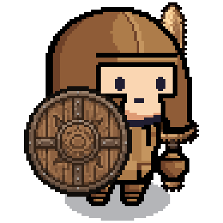

Pixel ORPG
The game in a window of its own, for Windows, macOS and Linux.
DownloadOr play the same game in your browser.
Windows
- Open
PixelORPG-win.exe. Your browser might warn you about the download first. Choose Keep. - Windows may show "Windows protected your PC". Click More info, then Run anyway.
- Follow the installer. You can choose where to install the game, and it adds a shortcut to your desktop and the Start menu.
macOS
Apple Silicon (M1 or later) only. On an Intel Mac, play in your browser.
- Open
PixelORPG-mac.dmgand drag Pixel ORPG into Applications. - Open it once. macOS says it can't check the app, so click Done.
- Go to System Settings → Privacy & Security, scroll down, click Open Anyway and enter your password.
If macOS says the app "is damaged", run this in Terminal and open it again:
xattr -dr com.apple.quarantine "/Applications/Pixel ORPG.app"Linux
- Make the file runnable, then run it:
chmod +x PixelORPG-linux.AppImage ./PixelORPG-linux.AppImage - If it says FUSE is missing (Ubuntu 22.04 and later), install it:
sudo apt install libfuse2t64 # 24.04 and later sudo apt install libfuse2 # 22.04 - If it closes right away (Ubuntu 24.04 and later), run it like this instead:
./PixelORPG-linux.AppImage --no-sandbox
Why the warnings?
The app isn't signed, because signing costs money every year, so your computer can't tell who made it. All of its code is on GitHub if you want to read it.
The app loads the game from pixel-orpg.online, so you always play the latest version. You'll need to log in once more in the app.